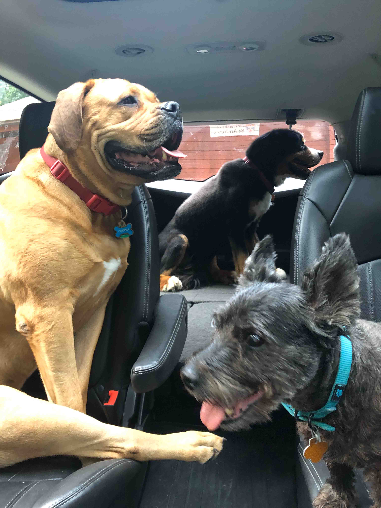

About my dogs

Cooper (left) sitting next to Lila (right) with George in the back.
My dogs mean the world to me. They were my first friends when moving to America, and continue to be my best friends 15 years later. This website will highlight the dogs of my past and present, what their personalities are like, some weird behaviors and facts about the breeds.